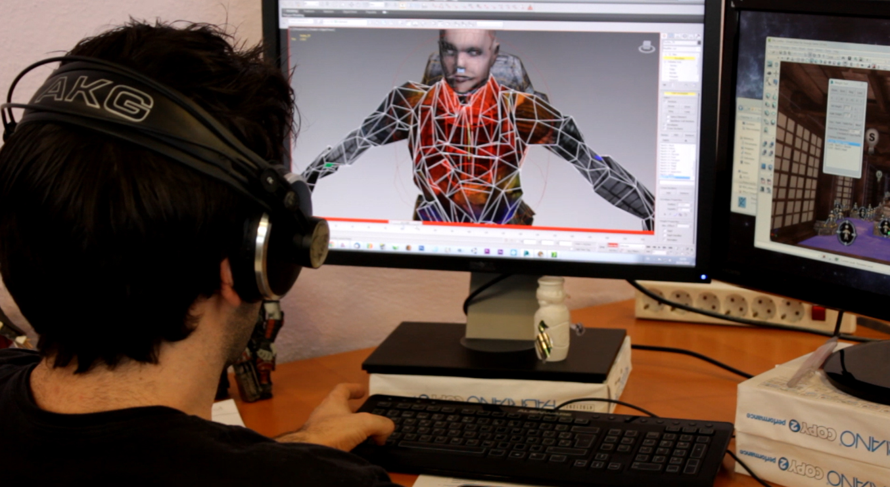

Concepción
En esta etapa es necesario definir los aspectos fundamentales que conformarán el videojuego a desarrollar, entre los que se encuentran:
-Género: Dentro de que géneros se va a desarrollar el juego. De no corresponder a un género muy conocido, se deben especificar las características:
-Game play: Lo que generará diversión a la hora de jugarlo.
-Story board: Algunas ideas sueltas acerca de cómo debe lucir el juego en cuanto a personajes, ambientación, música, etc.
Diseño
En esta fase se detallan todos los elementos que compondrán el juego, dando una idea clara a todos los miembros del grupo desarrollador acerca de cómo son. Entre estos elementos tenemos:
-Historia: forma en que se desenvolverán los personajes del juego y la historia del mundo (o un planeta en específico) representado avanza. Casi todos los juegos tienen historia.
-Guión: el proceso comienza con una reunión de todo el equipo de desarrollo, para que todo el mundo tenga la oportunidad de aportar sus ideas o sugerencias al proyecto. A partir de aquí el equipo de Guión trabaja por conseguir un borrador en el que queden plasmados cuáles serán los objetivos en el juego, las partes en las que se dividirá, el contexto en el que se desarrollará la acción, cuáles y cómo serán los principales personajes del juego, etc.
-Arte conceptual: se establece el aspecto general del juego. En esta etapa un grupo de artistas se encargan de visualizar o conceptualizar personajes, escenarios, criaturas, objetos, etc. Estos artistas se basan en las ideas originales de los creadores y luego entregan una serie de propuestas impresas o digitales de cómo lucirá el juego. Posteriormente el director de arte se encargará de escoger de entre las opciones aquellas que se apeguen más a la idea original. Algunas veces los artistas conceptuales permanecen durante todo el proceso de producción, pero lo usual es que sólo participen en las primeras etapas del proceso.
-Sonido: detallada descripción de todos los elementos sonoros que el juego necesita para su realización. Voces, sonidos ambientales, efectos sonoros y música.
-Mecánica de juego: es la especificación del funcionamiento general del juego. Es dependiente del género y señala la forma en que los diferentes entes virtuales interactuarán dentro del juego, es decir, las reglas que rigen éste.
Diseño de programación: describe la manera en que el videojuego será implementado en una máquina real (un PC, consola, teléfono móvil, etc) mediante un cierto lenguaje de programación y siguiendo una determinada metodología. Generalmente en esta fase se generan diagramas de UML ( Unified Modeling Language) que describen el funcionamiento estático y dinámico, la interacción con los usuarios y los diferentes estados que atravesará el videojuego como software.
De toda la fase de diseño es necesario generar un documento llamado Documento de Diseño, que contiene todas las especificaciones de arte, mecánicas y programación.
Planificación
En esta fase se identifican las tareas necesarias para la ejecución del videojuego y se reparten entre los distintos componentes del equipo desarrollador. También se fijan plazos para la ejecución de dichas tareas y reuniones clave.
Producción
Aquí se llevan a cabo todas las tareas especificadas en la fase de planificación, teniendo como guía fundamental el documento de diseño. Esto incluye entre otras cosas la codificación del programa, la creación de sprites, tiles y modelos 3d, la grabación de sonidos, voces y música, la creación de herramientas para acelerar el proceso de desarrollo, entre otras.
-Programación: la mayoría de los juegos se programan utilizando el lenguaje C++ dado que es un lenguaje de alto nivel que permite un rápido acceso a los componentes de hardware de una computadora o consola de juegos que lo hace más accesible.
-Ilustración: los juegos 2D deben ser ilustrados por artistas experimentados, quienes trabajan tomando en consideración las limitaciones técnicas del hardware sobre el cual correrá el juego, esto incluye: Cantidad de colores disponibles, tamaño de los sprites, resolución final de los sprites y formatos a utilizar. Los artistas 2D también son los encargados de elaborar las animaciones del juego.
-Interfaz: es la forma en que se verán los elementos de la interfaz gráfica de usuario y el HUD, mediante los cuales el usuario interactuará con el juego.
-Animación y Modelado 3D: los artistas utilizan herramientas comerciales de modelado y animación tridimensional.
-Sonido: los ingenieros de sonido se encargan de crear sonidos para cada objeto o personaje del juego. Pueden crear sonidos desde cero o utilizar sonidos del ambiente y modificarlos según sus necesidades.
Pruebas
Al igual que en otros tipos de software, los videojuegos deben pasar por una etapa donde se corrigen los errores inherentes al proceso de programación y a diferencia de aquellos, los videojuegos requieren un refinamiento de su característica fundamental, la de producir diversión de manera interactiva (jugabilidad). Generalmente esta etapa se lleva a cabo en dos fases:
-Pruebas alpha: Se llevan a cabo por un pequeño grupo de personas. El propósito es corregir los defectos más graves y mejorar características de jugabilidad no contempladas en el documento de diseño.
-Pruebas beta: Estas pruebas se llevan a cabo por un equipo externo de jugadores. De estas pruebas el videojuego debe salir con la menor cantidad posible de defectos menores y ningún defecto medio o crítico.
Mantenimiento
Una vez que el juego alcanza su versión final (RTM) y se publica, aparecerán nuevos errores o se detectarán posibles mejoras. Es necesario recopilar toda la información posible de los jugadores y a partir de ahí realizar los cambios oportunos para mejorar el juego en todos sus aspectos, ya sea de diseño, jugabilidad etc. Estas correcciones o mejoras se hacen llegar a los usuarios en forma de parches o actualizaciones, que en ocasiones pueden incluir también algunas características nuevas para el juego.
